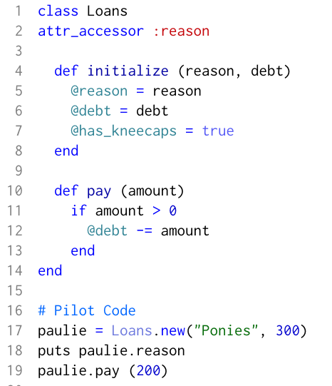

Ruby Classes
An Object You Can't Refuse
Ruby classes are incredibly powerful, as the following example shows. For example, let's say you're a legitimate businessman who occaisionally loans money to his friends. And you wish to keep track of those loans. You could write the following code:
Now take a look at this code. @reason, @debt, @has_kneecaps are instance variables. They are set in the initializer and are available throughout the class to any instance of the Class loans. @reason is readable and writeable attribute, meaning it can be displayed or changed without having to write a method for it. Hence the "puts Paulie.reason". On the other hand, debt can only be changed with the pay(amount) method. Note that amount is a local variable, and it dies immediately after the method pay is run.
Now if you'll excuse me, I'm off to enjoy some onion rings with my family and sudden-
David Rothschild, December 18, 2015